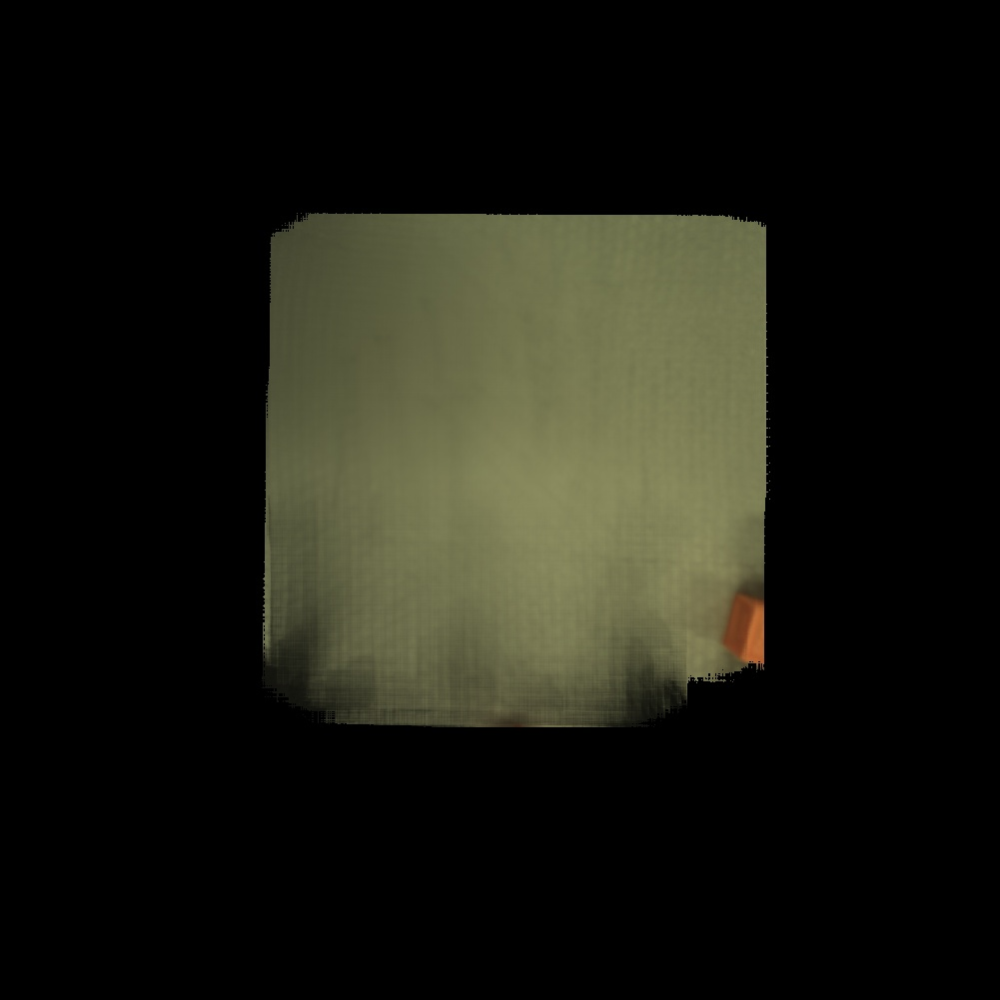
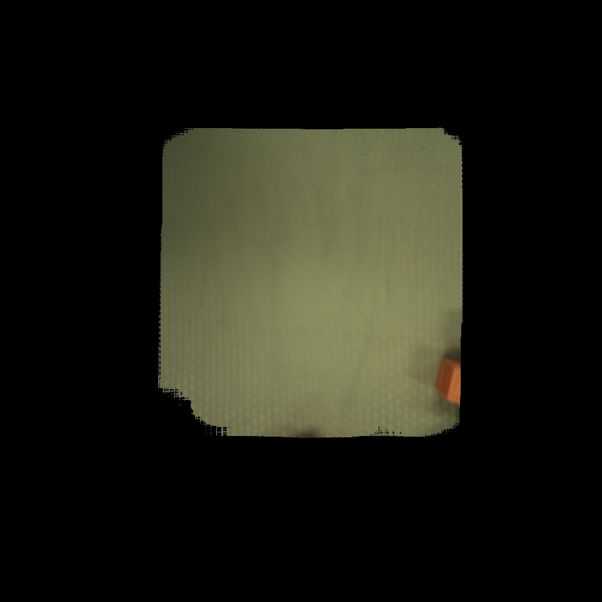
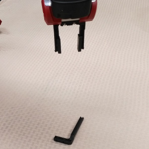

Picking Objects
Now we will use Baxter to pick things up. Restricting our picking to a table allows us to make some assumptions about the world. In particular, Ein assumes there is a flat ground surface parallel to the xy-plane whose constant z coordinate is known and that gravity pulls toward that plane.
A consequence of these assumptions is that we can forgo labeling grasp depth and close the fingers when they encounter an obstruction. When moving toward an object for a pick, stabbing our fingers outward from a pre-pick position, our fingertips will either press the object against the tabletop and trigger a grasp or go around the object (spoon handle, small block) and hit the table on either side of the target, triggering a grasp. Grasping in free space without a backing or resistor is less reliable because tipping is more likely to occur.
Another consequence is that most objects will come to rest on the ground plane. This is important because in order to see an object correctly, Ein needs to know (or finds out in the process) how far away from the camera it is. Most computer vision systems use individual RGB frames, or calculations performed on sequences of frames and summarized with statistics, to perform their operations. Ein captures tens to thousands of RGB frames and refocuses the rays from those images into computed 2D photographs and performs operations on those instead. Refocusing the light is very similar to adjusting the focus on traditional camera, and the aperture of our virtual camera is quite large, which means that we can achieve a very narrow depth of field. Knowing the position of the ground plane is a strong hint for the search problems involved and so speeds up the process dramatically.
The basic workflow for object picking is:
- (Calibrate once.)
- Create a map of the empty workspace (background map).
- Train object model.
- Automatic grasp annotation or manual grasp annotation.
- Map workspace and compute discrepancy (background subtraction).
- Detect and localize object(s) cascaded on discrepancy.
- Pick!
Create a background map.
Now you need to create a workspace background model, which we call a
background map. Send the gripper to the home position by running
goHome. The workspace should contain a square of two feet. It
should be as flat as possible. The system can accomodate altitude
changes but shadows and occlusion induce variance in the maps and
require careful sampling for accurate results. (If you would like to
change the home position, follow these
instructions.)
The wrist should now be pointing straight down with the camera should be about 38 cm from the table. If it is substantially higher or lower and this is the same space in which you calibrated, you should reset your table height and make sure you saved your calibration.
As usual, unless otherwise stated, leave the grippers in open position.
After making sure any object that can move is free from the workspace and that the lighting is how you will want it during picking, issue
tableUpdateBg
The arm should move in a spiral, return to its starting position, your CPU should go under load, and a few seconds after the CPU relaxes the formed image should show up first in the Observed Map window and next in the Background window. The table and objects shorter than a few centimeters should appear crisp up to the resolution of the map, which is 1mm to a pixel at this height with a good calibration. Object taller than a few centimeters will start to blur due to defocus.
Exercise: Inspect your background map.
Zoom in and see what detail you can make out. On a well-calibrated Baxter, you should be able to see detail up to several millimeters. Some examples from our lab appear below.

When picking objects, you can change the gripper gap and retake the
gripper mask by pointing the arm at magic paper as during calibration
and running:
setGripperMaskWithMotion
Here is an example of a background map with an incorrect gripper mask; note the dark gripper pixels smeared on the lower part of the image.

Update the observed map.
Next update the observed map. First, place an object into the robot’s field of view. Run tableTakeScene to create a map by
moving the arm in a spiral pattern. This map will be rendered in the
Gaussian Map Observed View” window shortly after the arm stops moving.
Once you have created an observed map and background map, the
discrepancy views will also populate, showing differences between the
observed and background maps. Here is an example showing the Allen
wrench from the Baxter gripper toolkit. Note that the discrepancy
density view is nearly all black except for the well-segmented
wrench. It may help to overlay the observed map and discrepancy
density windows and alt-tab between them to find differences. If you
do not see a well-segmented object, check your calibration and verify
that the lighting hasn’t changed since you made your background map.

Exercise: Put several objects in the scene and update the observed map.
Inspect the observed map, background map, and discrepancy view. If the objects do not appear well-segmented in the discrepancy window, than there may be a problem with your calibration.
Exercise: Remove all objects from the scene and update the observed map. Verify the discrepancy is empty.
Below is an example of an observed map and discrepancy view taken immediately after making a background map.


Pick a known object.
We will first demonstrate picking with a pre-trained model from the Rethink Baxter kit, the narrow long finger. Make sure the gripper gap is at its narrowest setting. Equip the rectangular rubber tips; we will be trying for a flush grasp. Find the narrow long finger from a Baxter parallel gripper kit and place it in the workspace. Here is a picture of the setup:

Issue:
endArgs "baxterNarrowLongFinger" setClassLabels
and check terminal and console output to verify the model loads. Next, make a map of the object by running:
tableMapBestClass
The arm should move in a spiral pattern and create a map of the table, then run the detector for the narrow long finger. You should compare the predicted and observed maps to assess the accuracy of the pose estimation.
Finally to pick the object run:
"baxterNarrowLongFinger" deliverObject
This word grasps the object and stops. You must run additional
commands to move the object after the grasp, such as
assumeHandingPose.
Exercise: Configurations
The model for baxterNarrowLongFinger only contains one configuration of the finger, lying on its side. Try placing the finger in other configurations and assess the detector performance by trying to pick. For example, place it vertically or try placing it on the opposite orientation on its side. Try to determine the configuration in which we have created a model.
For us, the model picks reasonably well in any configuration because it lines up the long part of the finger, but the likelihood and pose estimates are much better with the correct configuration.
Exercise: Dribble
Write a program to pick the object, perturb position, and place it.
The word perturbPosition moves the arm a random position and
orientation from its current location. The word touchDown moves the
arm to touch the table. Run it 100 times.
Ein includes a word to do this task in a loop:
tableInfiniteDribbleBest
Compare your implementation to ours.
Make a model for your object.
But you probably want to do more than that one object! Next, find an
object you want to pick, and make sure it fits in the grippers. Place
the object at the center of the workspace and return the arm as well
with goHome.
Place the object under the end effector, clear the space of any other object, and run
tableQuickScan
This generates an object model capable of localizing the object once moved and rotated within the plane of the table. Now you need to annotate a grasp. Issue
tableLock3dGrasp
and wait for it to finish. Once the stack is clear, by whatever means you choose
and without touching or moving the object from its locked position, drive the arm to a position which will result in a valid
grasp when the fingers close. Recall that the arm will move to a pre-pick position and advance towards the object until it encounters
resistence, at which point the grippers will close. Keep this in mind when choosing a grasp. If you move the object, clearStacks and
start over from tableLock3dGrasp.
Issue
clearClass3dGrasps
to clear the grasps for this object, removing any default or previously assigned grasps. If you add a bad grasp or knock the object and have to start over, make sure to clear your grasps.
When you are ready to add the current pose as a grasp, issue
add3dGrasp
You can and should add multiple grasps so that, if the first grasp or pre-grasp position is infeasible, Ein can select an alternative grasp.
Issue
writeFocusedClass
The output folder will appear on the console is an autogenerated name that includes the robot’s serial number and timestamp and will appear on the console. You can rename the focused class by issuing:
"newName" renameFocusedClass
Now it is time to test the object. Return to your workspace center and run
tableInfiniteDribbleBest
Dribbling is a nice demo, but you probably want the capability to pause the arm when it holds the object and command its movement for your own purposes. First map the area with:
tableMapBestClass
This word maps the area and adds a detection to the list of Blue Boxes visible in the Ein main window.
setPlaceModeToHand
changes the place mode to handing, which is the default, but some other Ein program may have changed it so make sure its value is set properly.
Now, when you issue
"itemA" deliverObject
the arm will move to pick the object and stop with an empty call stack after the attempt. You are free to command the arm from this point.
To clear all mapped Blue Box detections, issue
clearBlueBoxMemories
Note that this does not clear the predicted scene objects which show up in the Predicted View. To do that, issue
sceneClearPredictedObjects tableUpdateMaps
Finally there is the matter of handling multiple objects over a larger area. Defining scanning patterns is beyond the scope of this page, but defining multiple objects and detecting them across multiple workspaces is not.
Train a second object model and issue
endArgs "itemA" "itemB" setClassLabels
Train workspaces a and b, save their poses. It’s ok if the workspaces overlap. Put one object in each workspace, make sure it is closer to the center of its workspace than the other object. For each workspace, move the arm, load the background model, detect best, add to blue boxes, can command which blue box to pick.
Summary: Training and Dribbling an Object.
Here is the REPL history for a session that
tableUpdateBg
tableQuickScan
tableLock3dGrasp
clearClass3dGrasps
zDown
zDown
...
xUp
yUp
zDown
add3dGrasp
writeFocusedClass
tableReset
endArgs "catScan5_011509P0027right2016-07-02_13:03:38/autoClass_011509P0027_right_2016-07-02_13:19:18" setClassLabels
tableInfiniteDribbleBest
Exercise: Object delivery.
Write a program to pick up the object and hand it to the person.
Exercise: Clean up.
Write a program to pick up both objects and move them to the back workspace.
Exercise: Drop.
Write a program to pick up an object and drop it from a height of 10cm.